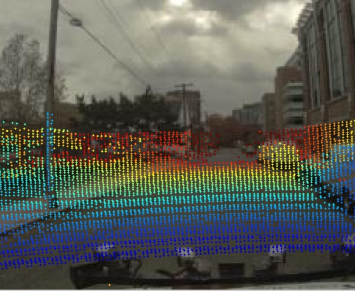
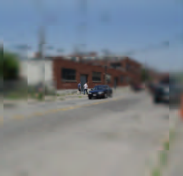
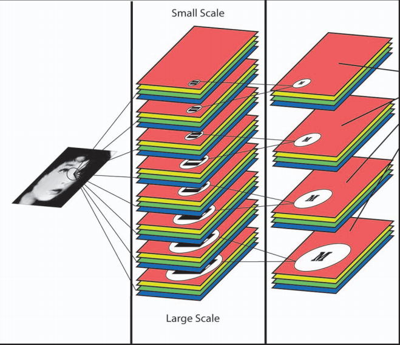
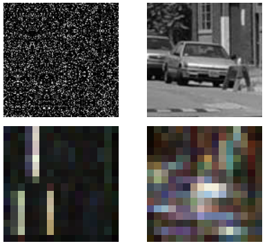
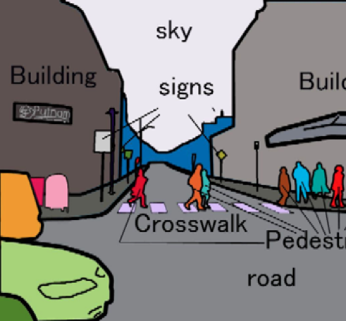
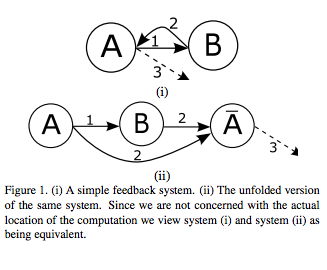
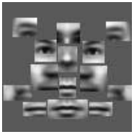
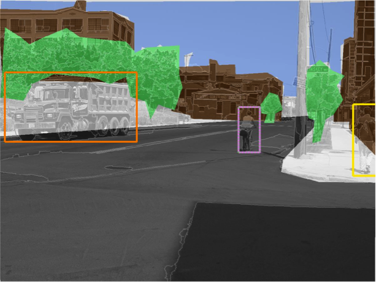
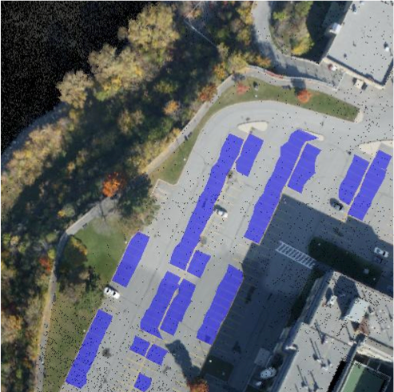

Stanley M. Bileschi, Ph.D.
Projects
Public Personas

LIDAR / Optical Geometric Autocalibration
Given two streams of data, where one is video, and one is a real-time lidar scan, produce a function that will map the lidar depth data correctly onto the video. This experiment began as a personal interest project, as I wanted to use the data produced by the MIT team's DARPA grand-challenge data in a computer vision project. The result of the project was a completely automated technique for finding the best projection matrix and distortion-correction parameters to match the two synchronous datastreams. The system uses multiple stages of refinement to find a pixel accuracy correspondance while conserving computational resources. After presentation at an ICCV workshop, this project was put on ice. The main insight was to attempt to match measured oriented depth discontinuities in the lidar to inferred depth discontinuities in the image. Possible next steps: (1) Use an improved refinement procedure making use of the projection equations (2) use an improved technique to determine image depth-discontinuities.
last-edit: 2010
Real Time Display Ad Purchasing Agents
DataXu is a Boston company start-up founded around the idea of using big data and machine learning to develop strong bidding strategies in the real-time auctions for internet display advertisements. The ongoing project is to design, develop, maintain and improve performance bidding strategies in this volitile setting. Our customers, the advertisers, wish to place advertisements to achieve specific goals, such as low cost-per-conversion, while meeting constraints such as a smooth spending profile and frequency limits per user.
Designing the machine learning systems for DataXu is my current full time Job

Scale in visual object detection
In the mid '00s, most visual object detection methods began with a set of positive examples of the target object of interest. These were images that were cropped neatly around the object, for instance the pedestrians in Dalal + Triggs or the faces of Viola + Jones. It had come took my attention that no one had done a comprehensive study of the effect of the crop scale on detector performance. The most interesting result of this work is that if you have a fixed sample budget, where each sample returns an average brightness at some position and scale, the best sampling strategy is a multi-scale one, not a strategy that collects a raster at a preferred scale.
2007

Biologically motivated object recognition
Lessons learned from studies of biological vision systems have led to advances in developing artificial scene understanding systems. CBCL's standard model, mimicing ventral vision areas LGN through V1 and V4, was using a version of alternating match-and-pool scale-free filters before and independant from SIFT, HoG, and Pyramid match became state-of-the-art. The PAMI paper summarizes a few years of this work, and it's ties to the biology. Working in and around the neuroscience was some of the most interesting collaborative work I did as a course 6 Ph.D. student.
2000-2008

Gestalt Image Representations
During the mid '00s the vision community concentrated around image features with self similar qualities. Most production systems were using some variant of histograms of oriented energy as input features, which were then passed on to generic machine learning systems. This project aimed to build and test image features capturing information that we know the human visual system is snappy at acquiring. Specifically, detectors for continuity, closure, symmetry, and repetition were created. It was shown that of these, continuity detection is key to improving object detection performance in real systems. In a side project that was never condensed into a prose artifact, along with Aude Olivia I was able to show that a simple histogram of oriented energy feature was able to account for much of the psychophysical results in human symmetry detection.
2007

Ph.D. Thesis: StreetScenes
My Ph.D. thesis summarized my work in biological image understanding and its application to real world unconstrained object recognition. The thesis began with the acquisition and labeling of around 3,500 high resolution images of Cambridge taken at street level from a digital camera. These images were hand labeled by a team of coached workers, who took care to label the 9 target objects using a standardized set of rules. I then demonstrated a complete end-to-end system capable of labeling a variety of different types of objects in the StreetScenes database using general machine learning tools and several different image representations. This served as a the platform for a number of studies into image features, context, search and retrieval, and so on.
2002-2006
A Critical View of Context
In this controversial project, I worked with Dr. Lior Wolf to show that context is a useful feature, but only so far. We claimed that once the image features were strong enough, contextual cues were no longer helpful. For instance, if you clearly see a 1987 Buick Regal hanging from a crane, yes it's out of context, but it is in fact a car. The contextual cues are useful only in so far as they can help the observer to focus limited computational resources where they are most likely to summarize the scene quickly. If the detected objects are clear and well described, contextual cues are no longer helpful in the refining of the object detections.
2005-2006

Hierarchical Vision System Architecture
This project explored different ways of combining selectivity and invariance building computational structures in the computer vision domain.
2006

Component Based Face Detection
Early face detection and recognition systems took a global view of the face-as-image. The entire image was represented as a vector and then processed. This work described a system wherein individual facial characteristics, such as the eye, nose, etc. were represented separately, using a floating system of parts which is more invariant to transformations of the 3D face. It seems that modern systems, as of 2012, nearly all use this approach.
2003
Variable Selection and Dimensionality Reduction
This was a continuing work I did with Lior Wolf when he first arrived at MIT. The work surrounded a linear algebra based algorithm for reducing the size of data while retaining information important to the classification task. It was interesting, but mostly his baby.
2005

A Unified Vision System using Poggio's Model
Similar in spirit to my Ph.D. thesis, this project was a summary of my attempt to build an end-to-end vision system including detecting a variety of different types of objects (cars, trees, buildings, pedestrians, etc.), and including contextual cues for improved computational performance. The system performed well at the time, and led to a oral presentation at that year's BMVC.
2005
Personal Matlab Library
Most of my work in graduate school was done in MATLAB. Looking back, I wish I had available the more advanced tools we have today. At the time, however, I had built up a messy but useful collection of common library functions. Things like dirfull, a dir command that also keeps track of full path names and other useful system file info; maxfilter, an image processing operation which transforms images to their local maximum value, parameterized by a kernel; resolveMissingOptions, a tool allowing structured parameter passing in a key value map with defaults; or FourLayerColor, a way of visualizing sparse 3D matricies as images. I recently went through this pile of old code and tried to curate it a bit. Some of it is heavily project-dependent, and unlikely to be useful in other contexts. That said, there are gems in there that I will definitely continue to use until MATLAB reproduces the functionality in their std lib.
mostly 2002 - 2008, some minor work afterwards
Dominion AI
Dominion is a multi-player card game where players take turns building a deck of cards. The rules are clear, there is no randomness, but the game is variable in that the set of available cards changes each game. The goal of this project was to explore the relative value of different agent-training algorithms in the Dominion domain. Specifically, I was interested if it would be possible to use genetic algorithms etc to train an automated player that was good enough to play against a medicore human, or better! It was also an opportunity to build something larger than a single-use script in python.
2012. incomplete.

DARPA Urgent
MIT CBCL was proud to participate in The DARPA Urban Reasoning and Geospatial ExploitatioN (URGENT) program. This project focused on leveraging airborne optical and lidar imagery, with the goal of detecting and recognizing 150 unique object types. My work focused on modifying our object recognition to function in this new domain. Big changes included having a nearly fixed scale, unknown in-plane rotation, and the addition of depth information.
2007-2009